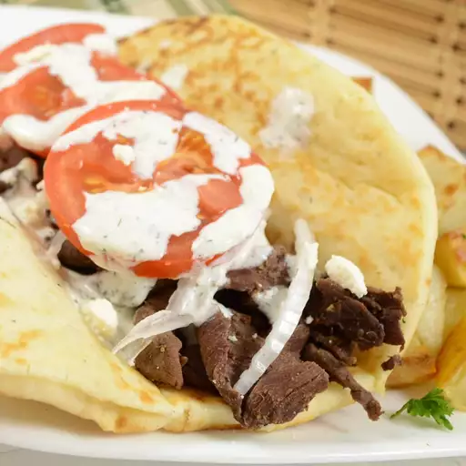

Venison Gyros

Description
This is a twist on the classic Greek sandwich.
Ingredients
- 2 tablespoons olive oil
- 1 ½ tablespoons ground cumin
- 1 tablespoon minced garlic
- 2 teaspoons dried marjoram
- 2 teaspoons ground dried rosemary
- 1 tablespoon dried oregano
- 1 tablespoon red wine vinegar
- salt and pepper to taste
- 3 pounds venison, cut into 1/4 thick strips
- 1 (12 ounce) package pita breads, warmed
Steps
- Whisk together the olive oil, cumin, garlic, marjoram, rosemary, oregano, red wine vinegar, salt, and pepper in a large glass or ceramic bowl.
Add the venison strips, and toss to evenly coat. Cover the bowl with plastic wrap, and marinate in the refrigerator at least 2 hours.
- Heat a large skillet over medium-high heat. Cook the venison strips, a half pound at a time, until the venison has browned on the outside and
is no longer pink on the inside, about 8 minutes. Pile the meat onto warmed pitas to serve.